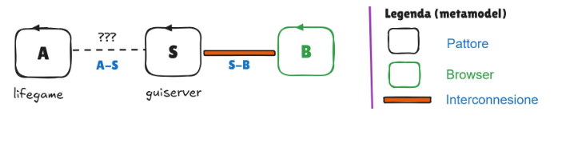

GIT repo: https://github.com/gianluca-varisco/issLab2026
GIT repo: https://github.com/gianluca-varisco/issLab2026
La logica del gioco è già stata analizzata nello Sprint1.
Utiliziamo quindi il risultato ottenuto, che costituisce un sottosistema funzionante, come punto di partenza per questo nuovo lavoro (deployed in un file conway26Java-1.0.jar).
La costruzione, l'esecuzione e l'interazione di protoattori è stata realizzata con sviluppo del progetto protoactor26.
E' quindi disponibile la libreria protoactor26-1.0.jar che verrà integrata nel progetto.
Realizzare una variante del progetto conway26GuiAlonePactorTcp nella ipotesi di costruire il sistema comprensivo sia di A che di S come un tutto organico, con le seguenti variazioni:
Il comando cell fa sì che S mandi un messaggio ad A per indurlo a modificare lo stato corrente di uana cella. Formalizzandolo come request (come da requisito R1), vincoliamo in modo implicito A ad inviare una risposta.
Lo stesso ragionamento può essere fatto per il comando clear, che implica che A ponga lo stato di tutte le celle a morte. Dopo questa operazione A è tenuto a rispondere al messaggio.
Il secondo requisito comporta lo sviluppo di seconda pagina di output, da fornire a tutti i non-owner, che non presenterà i pultati START, STOP, CLEAR e EXIT. Inoltre, la pressione su celle non comporterà alcun comando inviato (togliamo la componente reattiva della pagina), ma la griglia dovrà essere aggiornata con l'evoluzione del gioco.
Sarà compito del server tenere traccia della prima pagina che si è connessa e fornirle la pagina reattiva, dando invece la versione "ridotta" a tutti i successori.
Il terzo requisito parla di "pattern Sidecar".
Il patter Sidecar è un modello di progettazione utilizzato nell'architettura software, in particolare negli ambienti basati su microservizi. In questo modello, un container o un processo “sidecar” viene implementato insieme al container dell'applicazione principale per estenderne o potenziarne le funzionalità.
Il container sidecar opera nello stesso ambiente di esecuzione dell'applicazione principale e in genere fornisce servizi di supporto quali la registrazione degli eventi, il monitoraggio, la sicurezza o la comunicazione con altri servizi.
Questo modello consente al container dell'applicazione principale di concentrarsi sulle proprie funzionalità principali, delegando al sidecar le attività secondarie (registrazione degli eventi, monitoraggio, sicurezza, individuazione dei servizi o proxy di comunicazione), favorendo così la modularità, la scalabilità e la manutenibilità nei sistemi distribuiti.
Questo pattern viene utilizzato per evitare che la conoscenza del protocollo usato da S "inquini" il componente A, senza utilizzare un proxy. E' una concreta realizzazione del pattern logico ACL (Anti-Corruption Layer): A introduce un modulo Adapter che conosce il protocollo di S e traduce le richieste di A nel formato richiesto da S.
Quindi A parlerà a messaggi col Sidecar e il Sidecar parla con il servizio. Poiché un pattore può inviare messaggi messaggi ad altri pattori che fanno aprte dello stesso contesto, il Sidecar può essere un Pattore che fa aprte dello stesso contesto di A. Dobbiamo aggiungere un componente.
Si può partire con l'analisi dalla seguente architettura logica schematizzata:

I componenti, alla luce di quanto evidenziato nell'analisi dei requisiti, sono:
Andiamo ora a formalizzare le interazioni tra i vari componenti. Per quanto riguarda le interazioni S-B sono basate su una interconnessione tra il componente S e il componente B, realizzata tramite protocollo HTTP/WS.
Per quanto rigurada le interazioni A-S come abbiamo visto per rispettare il DIP viene inserito un sidecar.
Vengono formalizzati logicamente i vari messaggi scambiati.
A invia a Sidecar (la specifica del payload GRIDSTATE viene lasciata al progettista, in quanto dipende dalla rappresenatzione della griglia):
msg(display, dispatch, lifegame, lifeadapter, GRIDSTATE, N)
msg(cellchanged, reply, lifegame, lifeadapter, cell(X,Y,done), N)
msg(doneclear, reply, lifegame, lifeadapter, GRIDSTATE, N)
msg(changecell, request, guiservice, lifegame, cell(X,Y), N)
msg(cmdclear, request, guiservice, lifegame, clear, N)
msg(cmd, dispatch, guiservice, lifegame, CMD, N) //CMD=start|stop|exit
msg(cmd, dispatch, caller1, guiservice, CMD, N) //CMD=start|stop|exitFormalizzo con la seguente request il comando clear:
msg(cmdclear, request, caller1, guiservice, clear, N)
msg(changecell, request, caller1, guiservice, cell(X,Y), N)
GIT repo: https://github.com/gianluca-varisco/issLab2026